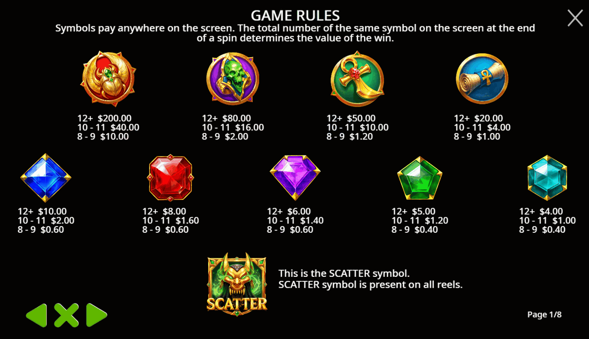
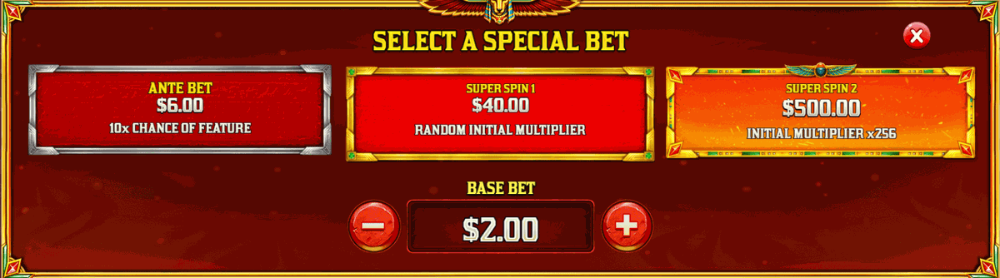
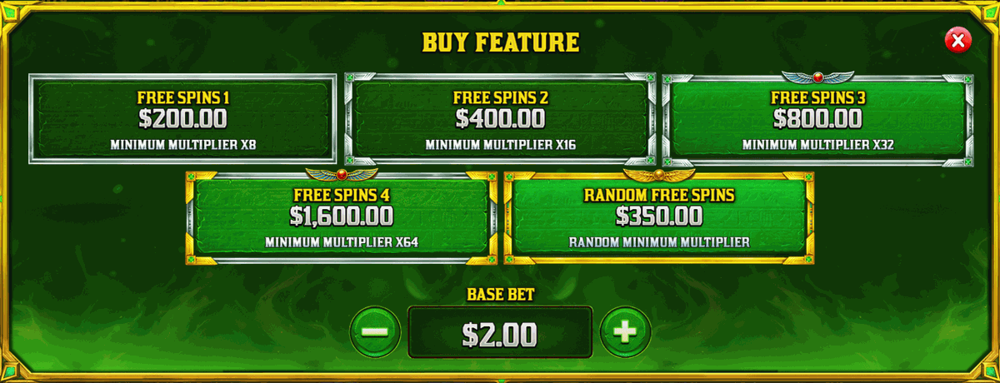

Complete symbol pay values, special bets, and all 5 Buy Feature tiers. Values shown as bet multipliers.

| Symbol | 8–9 Symbols | 10–11 Symbols | 12+ Symbols |
|---|---|---|---|
| 🔴 Golden Scarab (top premium) | 5× | 20× | 100× |
| 💀 Green Skull | 1× | 8× | 40× |
| ☥ Ankh | 0.6× | 5× | 25× |
| 📜 Papyrus Scroll | 0.5× | 2× | 10× |
| Symbol | 8–9 Symbols | 10–11 Symbols | 12+ Symbols |
|---|---|---|---|
| 🔷 Blue Diamond | 0.3× | 1× | 5× |
| 🔴 Red Ruby | 0.3× | 0.8× | 4× |
| 🟣 Purple Gem | 0.3× | 0.7× | 3× |
| 🟢 Green Gem | 0.2× | 0.6× | 2.5× |
| 🔵 Cyan Gem (lowest) | 0.2× | 0.5× | 2× |
Every winning tumble doubles the multiplier. Caps at ×1,024.
| Tumble # | Base Game | FS1 (×8 start) | FS4 (×64 start) |
|---|---|---|---|
| Tumble 1 | ×1 | ×8 | ×64 |
| Tumble 2 | ×2 | ×16 | ×128 |
| Tumble 3 | ×4 | ×32 | ×256 |
| Tumble 4 | ×8 | ×64 | ×512 |
| Tumble 5 | ×16 | ×128 | ×1,024 🏆 |
| Tumble 6+ | ×32 → ×1,024 | ×256 → ×1,024 | ×1,024 (cap) |

| Option | Cost | Starting Multiplier |
|---|---|---|
| Free Spins 1 | 100× bet | Min ×8 |
| Random Free Spins | 175× bet | Random min × |
| Free Spins 2 | 200× bet | Min ×16 |
| Free Spins 3 | 400× bet | Min ×32 |
| Free Spins 4 ⭐ | 800× bet | Min ×64 |

| Option | Cost | Effect |
|---|---|---|
| Ante Bet | 3× bet | 10× chance of triggering the feature |
| Super Spin 1 | 20× bet | 1 spin · random starting multiplier |
| Super Spin 2 | 250× bet | 1 spin · guaranteed ×256 start |